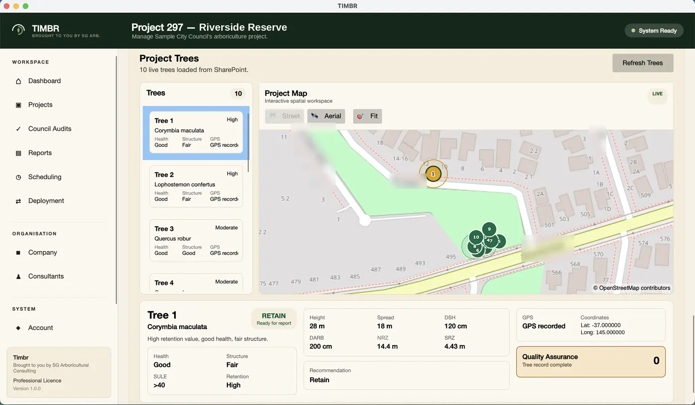

Assess trees on site. Report to council. Stop typing everything twice.
TIMBR Field is the tree assessment app I wanted on the days I was standing under a gum in the rain with a clipboard. Species, dimensions, health, structure and risk go into a proper form as you work. Photos are tagged where you took them. It runs with no signal at all, and everything lands in your own Microsoft 365 tenant ready for the report.
Private beta, capped at ten consultancies, five places left. No credit card, no obligation, and a real person on the other end.
- Built around AS 4970
- Works with no signal
- Your tenant, not ours

Why we built it
Every assessment was getting written twice.
Once under the tree, once at a desk at nine o'clock at night. That was the job for years, and it is the reason this app exists.
I run an arboricultural consultancy. For a long time the field half of our work ran on paper forms and a camera roll, and the office half ran on retyping. Notes got wet. Photos ended up in a phone gallery with nothing linking them to the tree they belonged to. Somebody would ask which of the four eucalypts had the included bark and we would be scrolling back through two hundred images to find out.
We tried the generic capture apps. They are built for plumbers and pest inspectors. None of them knew what a TPZ was, none of them could hold a proper species list, and every one of them wanted to keep our client data on their own servers, which is the first question a council asks and the last answer you want to give.
So we built the thing we actually needed, and then we built the office side to match.
Paper forms and generic apps
- Field notes typed up again at the office, hours gone and mistakes introduced
- Form builders that have never heard of a TPZ, an SRZ or SULE
- Photos stranded in a camera roll with no tree attached to them
- Your client data sitting in a database that belongs to someone else
- One bar of reception and the whole job stops
- Two consultants on the same site recording things two different ways
With TIMBR Field
- You record it once, on site, and the office already has it
- Fields written by an arborist, in the language you already use
- Photos taken in the app, tagged with GPS, attached to the right tree
- Everything syncs into your SharePoint, where your data already lives
- No reception needed. The app holds it and sends it when you are back
- Every consultant on your team records a tree the same way
What it does on site
Everything a site inspection needs, and nothing it does not.
The app walks each tree from arrival to a finished record. It is the same sequence you already follow in your head, just written down properly, and it keeps working ten metres past the last bar of reception.
A form that speaks arboriculture
Species, dimensions, age class, health, structure, SULE, retention value and recommended works, captured in a guided sequence with sensible lists to choose from. Nobody has to remember the wording. Records come back complete, and they come back the same whoever did the inspection.
- A searchable species library, botanical and common names
- Recommended works recorded against the tree, ready for the report
- Site context and client details travel with every assessment

AS 4970:2025 figures worked out while you type
Enter the trunk diameter and the app shows you the reference Notional Root Zone and Structural Root Zone straight away, worked out the way the 2025 standard sets out. The NRZ is the figure the old standard called the TPZ. Setting the actual Tree Protection Zone on the ground is still your call, which is exactly how the standard intends it. This just saves you doing the sums on the back of a form in the wind.
- NRZ and SRZ reference figures in your hand at the tree
- The 2025 terminology, so your records match the standard you report against
- Council audit workflows for checking scheduled works
Try the free NRZ and SRZ calculator, or read what changed in the 2025 revision.

Reception is not your problem any more
Every entry is written to the phone the moment you save it. Assess a whole site in a valley with the phone in flight mode if you like. When you drive back into range the queue empties itself into your SharePoint site, and the project list tells you exactly what has gone and what is still waiting.
- Full capture with zero connectivity, photos included
- Clear status on every project, so nothing is quietly lost
- Records and images travel together, nothing left behind

Photos that stay attached
Take the photo in the app and it belongs to that tree forever, with the location it was taken at. When a report gets questioned two years later, the evidence is still where you left it.
The job details come with it
Client, address, council, report type and inspection date sit with every assessment, so the person writing the report is not chasing you for context.
Nothing new for IT to approve
Sign in is your existing Microsoft 365 account. The app writes to SharePoint lists and libraries your organisation already runs. There is no new platform to certify.
Where your data lives
There is no TIMBR database.
Most field apps sync your work into a database they own, and then rent you access to it. We do not do that. Every assessment writes straight into your organisation's own Microsoft 365 and SharePoint, which you already control, already govern and already back up.
Assessments go from the phone into your SharePoint. No middle database, nothing held on our side.
Governed the way you already govern
Permissions, retention, auditing and backup. Every control your organisation puts on SharePoint applies to your tree data automatically. There is nothing extra to set up and nothing extra to certify.
An easy answer to a hard question
When a council asks where the data lives, you get to say "in our own tenant" instead of naming a vendor they have never heard of. That answer moves a procurement conversation along faster than any feature list.
You cannot be locked in
Your records are SharePoint lists and ordinary files. Stop paying us tomorrow and you lose nothing, because everything is already sitting where it always was. There is no export to beg for.
One set of numbers
Field capture, office reporting and the spatial work all read and write the same records in the same place. No exports between systems, no arguing about which spreadsheet is current.
For councils and records teams
The questions your IT and records people will ask.
If you work in local government, the software is the easy part. Getting it past procurement, records management and information security is the real job. Here is the short version, so you can forward this page instead of writing an email.
Where does the data actually sit?
In your tenant, in your SharePoint site, in the region your Microsoft 365 tenant is already provisioned in. We do not copy it anywhere else and we do not keep a copy. If your tenant is in Australia, your tree data is in Australia.
How does this fit our records obligations?
Assessments are SharePoint list items and library files, so whatever retention labels, disposal schedules and classification your records team already applies can be applied to them. Nothing sits outside your recordkeeping system waiting to be discovered later.
What if TIMBR goes away?
It is a fair question to ask a small vendor and we would rather answer it than dodge it. If we disappeared tomorrow, every assessment, photo and report you have made stays in your tenant, in readable formats, and your team keeps working. That is not a promise, it is just how the architecture works.
Who are we buying from?
SG Arboricultural Consulting, an Australian arboricultural consultancy based in Melbourne. You can call us on the number in the footer and speak to the person who builds it and uses it on his own jobs.
Need something more formal for a procurement pack? Ask us and we will put it in writing.
The rest of the toolkit
Field is where it starts. The suite finishes the job.
Capturing good data on site is only worth something if it turns into a report without being handled three more times. That is what the other two pieces are for, and they read the same records in the same tenant.
TIMBR Field
The phone in your pocket on site. Structured assessments, photos with locations, and a queue that does not care whether you have signal.
Apply for beta access
TIMBR Hub
The office side. Connect your Microsoft 365 tenant once, then manage projects and consultants, schedule site visits, and see which reports are ready to go out.
Part of the same platformTIMBR QGIS plugin
Bring in the development plans, work with your captured trees spatially, and generate the Arboricultural Impact Assessment from the same data you collected on site.
Part of the same platform
Who built this
An arborist wrote it, for his own jobs.
Not a software company that read about trees. The person building TIMBR is out doing assessments with it.

Shaun Gerrard
Consulting Arborist, SG Arboricultural Consulting
- Diploma of Arboriculture, AQF Level 5
- ISA Tree Risk Assessment Qualified (TRAQ)
- Certificate II, Electrical Supply Industry
- Seven years climbing and working in the industry
I have spent the last seven years in this industry, first in the tree, then writing the reports about it. TIMBR came out of the gap between those two jobs.
Climbing teaches you what actually matters about a tree and how quickly you can read one. Consulting teaches you that none of that is worth much unless it survives the trip back to the office in a form somebody else can use. The tools we had were good at one or the other, never both.
So TIMBR Field is shaped by the way an assessment really goes. The fields are in the order you look at things. The species list has the trees we actually plant here. The offline queue exists because half the sites I work on have no reception, and I got tired of losing an afternoon to it.
It is early, and it is honest about being early. If you use it during the beta and something is wrong or missing, you will be telling the person who wrote it, and it will probably change that week.
Based in Melbourne, working across Victoria. Call 0400 777 395 if it is easier than typing.
Beta consultancies
We would rather show you real ones than invent some.
Nothing here is a real quote yet. We are not going to invent oneThe app is being shaped on live jobs with a small group of consultancies. When they have used it long enough to have an opinion worth printing, their words will be here with their names on them.
This space is held for a beta consultancy's own words on how much time the app takes off an inspection day. We will print it when they have used it long enough to mean it.
Name published at launch
Held for a field arborist on what it is like to work a site with no reception and still finish the job before leaving.
Name published at launch
Held for a council or IT stakeholder on what it meant to keep the tree data inside their own tenant rather than a vendor's.
Name published at launch
Client and council logos go here once we have permission to use them
Straight answers
Questions we get asked.
If yours is not here, ring us or send an email and we will answer it properly.
Does it work when there is no phone signal?
Yes, and this is the part people test first. Every entry saves to a queue on the phone the moment you tap save, photos included. You can assess an entire site in flight mode. When you drive back into range the queue empties into your SharePoint site by itself, and the project list shows you what has gone and what is still waiting.
How accurate is the GPS under a canopy?
As accurate as the phone in your hand, which under dense canopy usually means a few metres rather than a few centimetres. It is good enough to tell four trees apart on a plan and to prove where a photo was taken. It is not survey grade and we will not pretend otherwise. If you need survey accuracy you should be picking up coordinates with survey equipment and TIMBR will happily sit alongside that.
Where is my data stored?
In your own Microsoft 365 tenant, as SharePoint lists and files. There is no TIMBR database holding your projects. Your permissions, retention rules and backups apply to it exactly the way they apply to everything else you keep in SharePoint.
What happens to my data if I stop using TIMBR?
Nothing happens to it. It is already in your tenant in standard formats, so you keep every assessment, every photo and every report right where they sit. There is no export to request, no migration project and nothing for us to hold onto.
Does it calculate the NRZ and SRZ?
Yes. It shows the reference Notional Root Zone and Structural Root Zone worked out from the trunk diameter measurements you enter, using the method in AS 4970:2025. If you learned this standard before the 2025 revision, the NRZ is the figure you knew as the TPZ.
They are labelled as reference figures on purpose. The app does arithmetic, it does not do professional judgement. Under the 2025 standard the Tree Protection Zone is the area actually protected on site, which the project arborist sets after looking at the tree and the ground, and where the notional figure is not the right answer that is still your call to make and justify. You can try the same calculation in your browser.
Do I need Microsoft 365?
Yes. TIMBR Field signs in with your Microsoft 365 accounts and writes into your SharePoint site. If your consultancy already runs on Microsoft 365, and most do, setup takes minutes and your IT people have nothing new to assess. If you are not on Microsoft 365 then this is not the right tool for you yet.
Can I get the data into CAD or a spreadsheet?
Yes. Because the records are SharePoint lists you can open them in Excel whenever you like. TIMBR Hub and the QGIS plugin read the same data for plans and reports. If your drafting still happens in a CAD package you are happy with, keep using it. We are trying to fix the front half of the job, not force you to replace the back half.
Does it work on my own phone?
It runs on iOS and Android, so yes, on the phone you already carry. There is no proprietary hardware and nothing to buy.
What does it cost?
Pricing is not settled while we are in private beta, and we would rather say that than publish a number we then change. Consultancies in the beta will see pricing before anything is ever charged, and will keep beta pricing for the first twelve months after launch. It will be in Australian dollars.
How long does the beta run and what do I actually get?
The beta is capped at ten consultancies and there are five places left. You get help setting it up against your own tenant, a walk through with an arborist rather than a support script, and a direct line to the person writing the code. In return we want to hear what is broken and what is missing.
We keep the number low because the onboarding is done personally, not because we are pretending to be exclusive. If that sounds like more involvement than you want right now, say so in the form and we will tell you when it opens up properly instead.
Private beta
Put it in your crew's hands.
We are capping the beta at ten consultancies, and we have room for five more in the next intake. It stays small because the setup and the walk through are done by the person who writes the code, and there are only so many hours in a week. Tell us a bit about your practice and we will be in touch.
- Setup against your own Microsoft 365 tenant, done with you
- A walk through with an arborist, not a support script
- A direct line to the person building it
- Beta pricing held for twelve months after launch
Would rather talk than type? Call 0400 777 395.